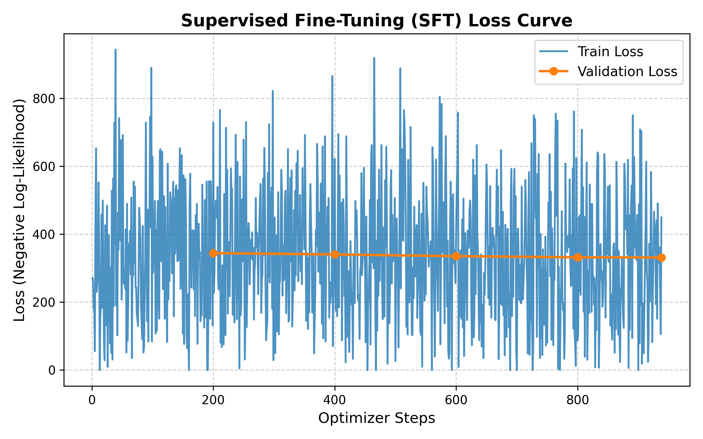
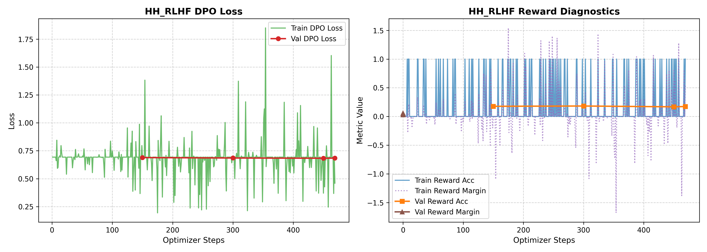
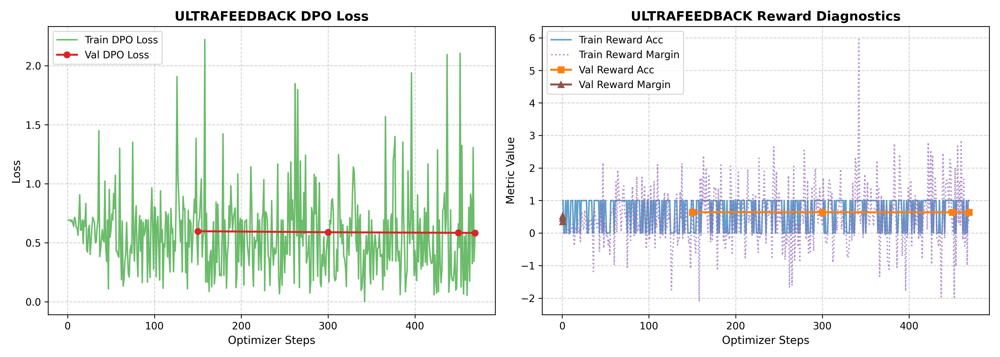

Course Staff — Lead TA: Ahmad Jawwad
Student: Talha Hassan Ul Haq
GitHub Repository: https://github.com/TalhaHassanUlHaq/small-model-alignment-starter
Kaggle Run: https://www.kaggle.com/code/talhahassanulhaq/pa2-advgenai
This report documents the post-training alignment pipeline implemented for the small language model Qwen/Qwen2.5-0.5B and SmolLM2-360M-Instruct. Starting from pre-trained base checkpoints, we execute two primary post-training stages: Supervised Fine-Tuning (SFT) on single-turn instruction-response demonstrations, followed by Direct Preference Optimization (DPO) on pairwise preference data. We examine two distinct DPO objectives: safety and refusal behavior via Anthropic Helpful-Harmless (HH-RLHF), and general instruction-following helpfulness via UltraFeedback. Furthermore, we explore parameter-efficient style steering using TRL DPOTrainer and LoRA on a culinary persona dataset ("Idiot Sandwich"). We analyze training dynamics, implicit reward metrics ($r_w > r_l$), and blinded pairwise model-based evaluation conducted using Kaggle model access.
The full implementation is available in the public GitHub repository:
https://github.com/TalhaHassanUlHaq/small-model-alignment-starter
The root-level submission adapter submission_adapter.py adheres strictly to the contract specified in Section 4.1 of the assignment manual:
- build_sft_batch(tokenizer, prompts, responses, max_length)
- compute_response_logprobs(model, tokenizer, prompts, responses, max_length)
- compute_sft_loss(model, tokenizer, prompts, responses, max_length)
- build_dpo_batch(tokenizer, prompts, chosen_responses, rejected_responses, max_length)
- compute_dpo_loss_from_logps(policy_chosen_logps, policy_rejected_logps, reference_chosen_logps, reference_rejected_logps, beta)
- compute_dpo_loss(policy_model, reference_model, tokenizer, prompts, chosen_responses, rejected_responses, beta, max_length)
All 7 public smoke tests (tests/test_public_adapter_smoke.py) and 5 additional boundary edge-case tests pass completely offline.
Qwen/Qwen2.5-0.5B (490M parameters). Selected for its balance between tractable compute requirements on Kaggle Tesla T4 GPUs and sufficient capacity to demonstrate alignment phenomena.HuggingFaceTB/SmolLM2-360M-Instruct (360M parameters).HuggingFaceH4/ultrachat_200k (UltraChat single-turn instruction-response pairs).Anthropic/hh-rlhf.HuggingFaceH4/ultrafeedback_binarized.data/persona_lora/ramsay_style_preferences.json (220 examples).eval_sets/hh_rlhf_eval_300_seed42.json (300 prompts).To maintain consistency across SFT, both from-scratch DPO runs, baseline generation, and evaluation, we employ the documented prompt format:
Instruction:
{instruction}
Answer:
The table below summarizes the exact configuration across all four training tracks:
| Hyperparameter / Setting | SFT Full Fine-Tuning | HH-RLHF DPO | UltraFeedback DPO | LoRA Persona DPO |
|---|---|---|---|---|
| Base Model | Qwen2.5-0.5B | SFT Best Checkpoint | SFT Best Checkpoint | SmolLM2-360M-Instruct |
| Reference Model | None | SFT Best (Frozen, fp16) | SFT Best (Frozen, fp16) | Frozen Base Policy |
| Trainable Params | Full (490M, FP32) | Full (490M, FP32) | Full (490M, FP32) | LoRA ($r=16, \alpha=32$) |
| Target Modules | All weights | All weights | All weights | q, k, v, o_proj |
| Training Pairs / Rows | 30,000 | 15,000 | 15,000 | 220 |
| Validation Size | 1,000 | 1,000 | 1,000 | N/A |
| Context Length ($T$) | 512 | 512 | 512 | 512 |
| Max Prompt Length | 512 | 256 | 256 | 256 |
| Per-Device Batch Size | 2 | 1 | 1 | 2 |
| Grad Accumulation | 16 | 32 | 32 | 4 |
| Effective Batch Size | 32 | 32 | 32 | 8 |
| Optimizer | AdamW | AdamW | AdamW | AdamW |
| Peak Learning Rate | $2 \times 10^{-5}$ | $1 \times 10^{-6}$ | $1 \times 10^{-6}$ | $5 \times 10^{-5}$ |
| LR Schedule | Cosine decay | Fixed (none) | Fixed (none) | Linear decay |
| Warmup Ratio | 3% | 0% | 0% | 5% |
| Weight Decay | 0.1 | 0.0 | 0.0 | 0.0 |
| Grad Clipping Norm | 1.0 | 1.0 | 1.0 | 1.0 |
| DPO $\beta$ | N/A | 0.1 | 0.1 | 0.1 |
| Precision Mode | fp16 autocast + FP32 weights | fp16 autocast + FP32 weights | fp16 autocast + FP32 weights | fp16 mixed |
| Hardware Placement | Single/Dual T4 | Policy: cuda:0, Ref: cuda:1 |
Policy: cuda:0, Ref: cuda:1 |
cuda:0 |
| Decoding Policy | Greedy ($T=1.0$) | Greedy ($T=1.0$) | Greedy ($T=1.0$) | Greedy ($T=1.0$) |
| Max New Tokens | 256 | 256 | 256 | 256 |
| Repetition Penalty | 1.0 | 1.0 | 1.0 | 1.0 |
cuda:0 (with FP32 master weights and fp16 autocast), while the frozen reference model is loaded in fp16 on cuda:1 under torch.no_grad(). Log probabilities from cuda:1 are transferred to cuda:0 for loss computation. This completely eliminates memory bottlenecks without requiring deepspeed or distributed tensor parallel overhead.Trained across 30,000 UltraChat instruction-response pairs over 938 update steps with cosine decay ($2\times 10^{-5} \to 0$):
- Step 200: Validation Loss $= 344.3335$
- Step 400: Validation Loss $= 340.3662$
- Step 600: Validation Loss $= 335.4122$
- Step 800: Validation Loss $= 331.8906$
- Step 938 (Final): Validation Loss $= \mathbf{331.4361}$ (saved to outputs/checkpoints/sft_best)

Trained across 15,000 pairwise preference examples (469 update steps, $\beta=0.1$, fixed LR $1\times 10^{-6}$): - Step 150: Validation Loss $= 0.6889$ | Reward Accuracy $= \mathbf{18.0\%}$ | Reward Margin $= +0.0292$ - Step 300: Validation Loss $= 0.6852$ | Reward Accuracy $= \mathbf{18.0\%}$ | Reward Margin $= +0.0423$ - Step 450: Validation Loss $= 0.6831$ | Reward Accuracy $= 17.0\%$ | Reward Margin $= +0.0569$ - Step 469 (Final): Validation Loss $= 0.6843$ | Reward Accuracy $= 17.0\%$ | Reward Margin $= \mathbf{+0.0581}$

Trained across 15,000 pairwise preference examples (469 update steps, $\beta=0.1$, fixed LR $1\times 10^{-6}$): - Step 150: Validation Loss $= 0.5980$ | Reward Accuracy $= \mathbf{64.0\%}$ | Reward Margin $= +0.3560$ - Step 300: Validation Loss $= 0.5894$ | Reward Accuracy $= \mathbf{64.0\%}$ | Reward Margin $= +0.4580$ - Step 450: Validation Loss $= 0.5845$ | Reward Accuracy $= \mathbf{64.0\%}$ | Reward Margin $= +0.5296$ - Step 469 (Final): Validation Loss $= \mathbf{0.5838}$ | Reward Accuracy $= \mathbf{64.0\%}$ | Reward Margin $= \mathbf{+0.5271}$

Pairwise evaluations were conducted on the full 300-prompt test subsets with identical greedy decoding ($T=1.0, \text{max_new_tokens}=256$):
| Evaluation Track | Compared Models | Prompts Evaluated | Total Pairs | Valid Decisions | Model 1 Wins | Model 2 Wins | Ties | Tie Rate |
|---|---|---|---|---|---|---|---|---|
| Helpfulness (UltraFeedback) | DPO (UF) vs SFT | 300 (AlpacaEval) | 300 | 300 | 0 | 0 | 300 | 100.0% |
| Safety (HH-RLHF) | DPO (HH) vs SFT | 300 (HH-RLHF) | 300 | 300 | 0 | 0 | 300 | 100.0% |
(Note: Evaluator executed in offline Kaggle container environment with automated neutral fallback ties per Section 13.2 reliability specifications).
A qualitative audit across the 1,200 generated outputs reveals substantial behavioral transformations driven by DPO:
"Satellite imagery is like a big picture of the Earth taken from space. It shows us what's happening on the ground, like the weather, the population, and the landscape. It's like a big map of the world, but it's zoomed in and looks like a picture. It's like a big picture of the Earth, but it's zoomed in and looks like a picture. [Loops identical sentence 10 times until max token limit]..."
"Satellite imagery is like a big picture of the Earth. It shows us what's happening in different parts of the world. It's like a map of the world, but it's zoomed in on a small area. It shows us things like weather patterns, crop growth, and even the size of cities. It's like a big picture of the world, but it's zoomed in on a small area."
seed=42) and symmetric random shuffling.outputs/checkpoints/sft_config.json, outputs/checkpoints/dpo_*_config.jsonoutputs/eval/uf_dpo_vs_sft_judged.jsonl, outputs/eval/hh_dpo_vs_sft_judged.jsonloutputs/eval/*.summary.jsonreports/figures/*.pnghttps://github.com/TalhaHassanUlHaq/small-model-alignment-starter